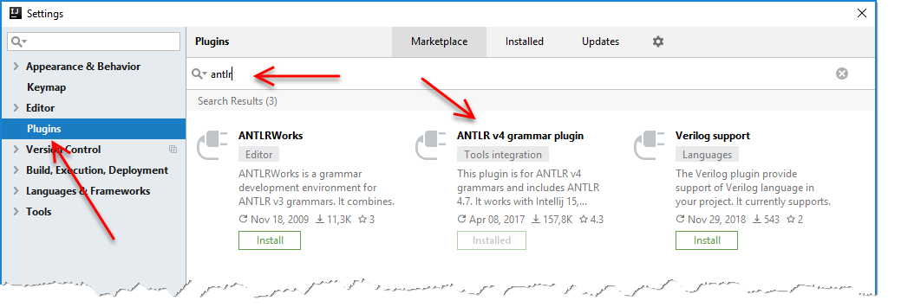
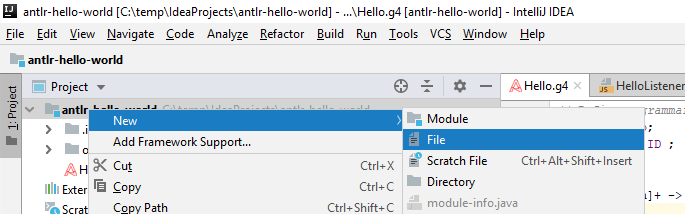
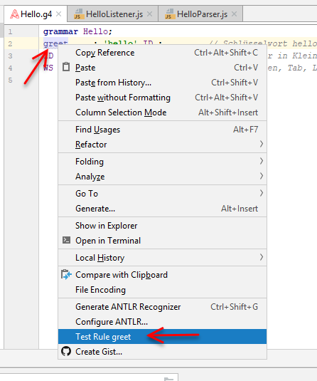
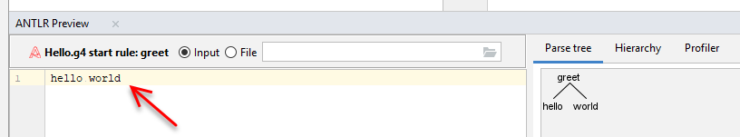
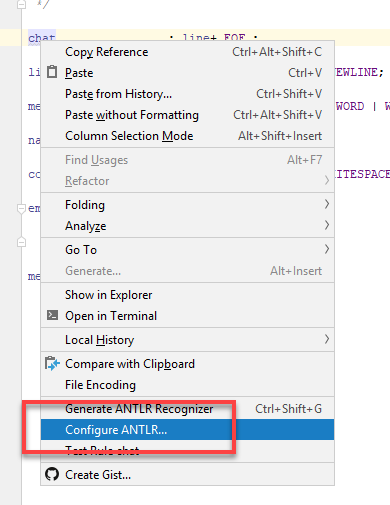
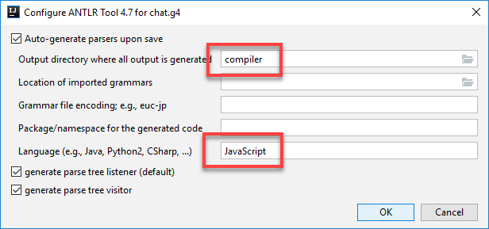
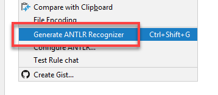
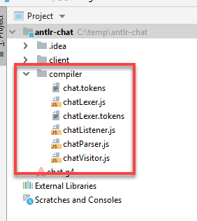

Installieren von [IntelliJ Community Edition]
(https://www.jetbrains.com/idea/download/#section=windows) (kostenlos)
IntelliJ starten
Ein neues Projekt mit New Project - Empty Project starten. In dieser Anleitung gehen wir davon aus, dass das Projekt antlr-hello-world heißt.
Settings-Dialog mit Strg+Alt+S öffnen, nach dem antlr Plugin suchen und installieren

IntelliJ neu starten und das zuvor angelegte Projekt wieder laden
Neue Datei Hello.g4 anlegen

Folgende Grammatik in die neue Datei einfügen:
grammar Hello;
greet : 'hello' ID ; // Schlüsselwort hello gefolgt von einem Identifier
ID : [a-z]+ ; // Identifier in Kleinbuchstaben
WS : [ \t\r\n]+ -> skip ; // Leerzeichen, Tab, Leerzeilen ignorierenRechte Maustaste auf die Regel greet und Test Rule greet anklicken

hello world eingeben und ansehen, wie ANTLR den Text nach der angegebenen Grammatik zerlegt

Experimentiere mit folgenden Eingaben (beachte die Fehler, die angezeigt werden)
Neue Datei Chat.g4 anlegen
grammar chat;
/*
* Lexer Rules
*/
fragment A : ('A'|'a') ;
fragment S : ('S'|'s') ;
fragment Y : ('Y'|'y') ;
fragment H : ('H'|'h') ;
fragment O : ('O'|'o') ;
fragment U : ('U'|'u') ;
fragment T : ('T'|'t') ;
fragment LOWERCASE : [a-z] ;
fragment UPPERCASE : [A-Z] ;
SAYS : S A Y S ;
SHOUTS : S H O U T S;
WORD : (LOWERCASE | UPPERCASE | '_')+ ;
WHITESPACE : (' ' | '\t');
NEWLINE : ('\r'? '\n' | '\r')+ ;
/*
* Parser Rules
*/
chat : line+ EOF ;
line : name command message NEWLINE;
message : (emoticon | mention | WORD | WHITESPACE)+ ;
name : WORD WHITESPACE;
command : (SAYS | SHOUTS) ':' WHITESPACE ;
emoticon : ':' '-'? ')'
| ':' '-'? '('
;
mention : '@' WORD ;Testsätze:
Antlr Generator konfigurieren


Lexer/Parser generieren


npm init
npm install antlr4
app.js:
const antlr4 = require('antlr4');
const ChatLexer = require('./compiler/chatLexer').chatLexer;
const ChatParser = require('./compiler/chatParser').chatParser;
const input = 'tim SAYS: hello @world :-)\n';
const chars = new antlr4.InputStream(input);
const lexer = new ChatLexer(chars);
const tokens = new antlr4.CommonTokenStream(lexer);
const parser = new ChatParser(tokens);
parser.buildParseTrees = true;
const tree = parser.chat();
for(const line of tree.children) {
if (line.constructor.name !== ChatParser.LineContext.name) {
// Reached end of program
break;
}
const name = line.children[0];
console.log(`Name: ${name.children[0].getText()}`);
const command = line.children[1];
console.log(`Command: ${lexer.symbolicNames[command.children[0].getSymbol().type]}`);
const message = line.children[2];
for(var msg of message.children) {
switch (msg.constructor.name) {
case 'TerminalNodeImpl':
if (msg.getSymbol().type === ChatLexer.WORD) {
console.log(`Word: ${msg.getText()}`);
}
break;
case ChatParser.MentionContext.name:
console.log(`Mention: ${msg.children[1].getText()}`);
break;
case ChatParser.EmoticonContext.name:
if (msg.children[msg.children.length - 1].getText() === `)`) {
console.log('Happy');
} else {
console.log('Sad');
}
break;
}
}
}
node app.js